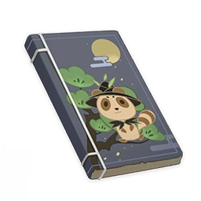

Inazuma · Books & Literature
Toki Alley Tales
This six-volume Inazuma folklore collection follows a tanuki narrator recording the boastful tengu Yoichi, the bake-neko Osen, and other Toki Alley residents through deliberately conflicting tales.

Six Inazuma Volumes from Torn Pages
Toki Alley Tales is a six-volume Inazuma collection assembled from torn pages scattered across the islands and from fishing. The frame follows a tanuki narrator who writes down stories told by Yoichi, a boastful tengu living on Toki Alley in Hanamizaka; later volumes also include a bake-neko’s version and accounts of the neighborhood’s other residents.
The collection grants the Tales of Monstrous Madness achievement when assembled. Its own opening calls Toki Alley a place where history and wild tales mingle, a useful cue for reading the stories as playful folklore rather than a dependable chronology.
Tanuki History and Yoichi’s Boasts
The prologue gives a comic tanuki account of Inazuma’s early past: it claims the islands once belonged to tanuki, that kitsune arrived by sea, and that two enormous wars of shape-shifting confusion led to the emergence of humans. These are the tanuki elders’ claims inside the story, not a confirmed account of Inazuma’s origin.
The next tale turns to Yoichi’s golden paper fan and her alleged service to a shogun in another world. Her account swells into extravagant battlefield numbers and a dramatic rescue. The narrator repeatedly signals that Yoichi is drunk and may be embellishing her story.
Osen and the Conflicting Version
The bake-neko Osen tells a competing version of the fan’s history. Rather than Yoichi’s heroic escape, Osen describes a drunken tengu falling into the sea while the fan is retrieved amid the confusion. The deliberate contradiction makes these chapters a comedy of unreliable storytellers, not evidence of a second Inazuman war.
The later pieces shift to Granny Ame, an ameonna who keeps her past to herself, and Gonbei, an old craftsman who admits he once deceived her while trying to bring rain to his village. The narrator carries a lacquered box between them, leaving the feelings between the old friends only partly resolved.
Folklore, Not a Historical Timeline
Across the six volumes, animal spirits, tengu, bake-neko, an ameonna, and one mortal resident meet through neighborhood stories and repeated versions of the past. The tanuki narrator’s editorial asides and the contradictions between Yoichi and Osen are part of the collection’s design.
The book preserves Inazuman folklore and the personalities its tellers assign to youkai. It does not independently establish that the alleged tanuki-kitsune wars or Yoichi’s otherworld battles happened as described.
This is an original CoreGG reading guide, not an official HoYoverse article or a reproduction of the game text. Source links below identify the records used so you can check the original context.
Sources & references
Check these sources for the original game text and reference trail.